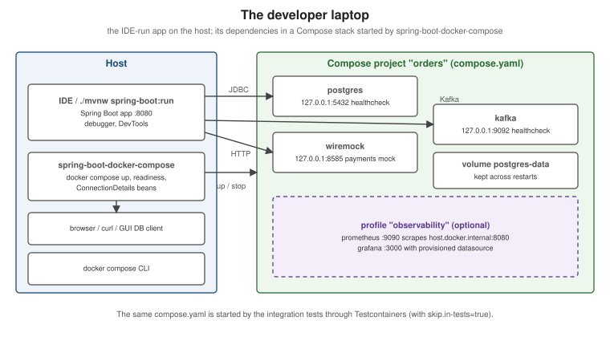

Compose for Local Development
|
This content was generated with the assistance of AI and should be verified against the official documentation before being relied on in production. |
The fastest local loop for a Spring Boot service is: run the application from the IDE, and let Docker run everything
it depends on — database, broker, downstream API mocks, observability. This page describes the repository’s house
setup for that loop (the one .claude/skills/iru-setup-java-springboot-testcontainers generates): a compose.yaml
at the repository root, started automatically by Spring Boot’s Docker Compose support, and reused unchanged by the
integration tests. It targets Spring Boot 4.1.x on Java 25 with Compose v5.5.x and Docker Engine 29.8.x or Docker
Desktop 4.91 or later. Broker-specific Compose usage (Kafka and RabbitMQ service connections, tips for each broker)
is covered in Spring Boot Testing for Messaging and not
repeated here; this page is the single place that documents the spring.docker.compose.* properties.

The house compose.yaml
One file at the repository root describes the whole runtime environment. Its rules: every image pinned to a
version, every service with a real healthcheck, named volumes for state worth keeping, development-only
credentials labelled as such, fixed host ports bound to 127.0.0.1 so GUI tools can connect, and optional tooling
behind a profile.
# compose.yaml -- local development AND integration tests (one definition, no drift).
# All credentials in this file are development-only placeholders. Never reuse them anywhere real.
name: orders
services:
postgres:
image: postgres:18.1
environment:
POSTGRES_DB: orders
POSTGRES_USER: orders
POSTGRES_PASSWORD: orders-dev-only # development-only
ports:
- "127.0.0.1:5432:5432"
volumes:
- postgres-data:/var/lib/postgresql
healthcheck:
test: ["CMD-SHELL", "pg_isready -U orders -d orders"]
interval: 5s
timeout: 3s
retries: 20
kafka:
image: apache/kafka:4.2.1
ports:
- "127.0.0.1:9092:9092"
environment:
KAFKA_NODE_ID: 1
KAFKA_PROCESS_ROLES: broker,controller
KAFKA_LISTENERS: CONTROLLER://:29093,PLAINTEXT_HOST://:9092,PLAINTEXT://:19092
KAFKA_ADVERTISED_LISTENERS: PLAINTEXT_HOST://localhost:9092,PLAINTEXT://kafka:19092
KAFKA_LISTENER_SECURITY_PROTOCOL_MAP: CONTROLLER:PLAINTEXT,PLAINTEXT:PLAINTEXT,PLAINTEXT_HOST:PLAINTEXT
KAFKA_CONTROLLER_LISTENER_NAMES: CONTROLLER
KAFKA_CONTROLLER_QUORUM_VOTERS: 1@kafka:29093
KAFKA_INTER_BROKER_LISTENER_NAME: PLAINTEXT
KAFKA_OFFSETS_TOPIC_REPLICATION_FACTOR: 1
KAFKA_TRANSACTION_STATE_LOG_REPLICATION_FACTOR: 1
KAFKA_TRANSACTION_STATE_LOG_MIN_ISR: 1
KAFKA_SHARE_COORDINATOR_STATE_TOPIC_REPLICATION_FACTOR: 1
KAFKA_SHARE_COORDINATOR_STATE_TOPIC_MIN_ISR: 1
KAFKA_GROUP_INITIAL_REBALANCE_DELAY_MS: 0
healthcheck:
test: ["CMD-SHELL", "/opt/kafka/bin/kafka-broker-api-versions.sh --bootstrap-server localhost:9092 > /dev/null"]
interval: 10s
timeout: 10s
retries: 20
wiremock: # stands in for the downstream payments API
image: wiremock/wiremock:3.13.2
command: ["--global-response-templating", "--disable-banner"]
ports:
- "127.0.0.1:8585:8080"
volumes:
- ./wiremock:/home/wiremock:ro # mappings/ and __files/
healthcheck:
test: ["CMD", "curl", "-fsS", "http://localhost:8080/__admin/health"]
interval: 5s
timeout: 3s
retries: 20
labels:
org.springframework.boot.ignore: "true" # no Spring Boot service connection for the mock
prometheus:
image: prom/prometheus:v3.6.0
profiles: ["observability"]
ports:
- "127.0.0.1:9090:9090"
volumes:
- ./observability/prometheus/prometheus.yml:/etc/prometheus/prometheus.yml:ro
extra_hosts:
- "host.docker.internal:host-gateway" # scrape the IDE-run app on Linux too
grafana:
image: grafana/grafana:12.2.0
profiles: ["observability"]
ports:
- "127.0.0.1:3000:3000"
volumes:
- ./observability/grafana/provisioning:/etc/grafana/provisioning:ro
volumes:
postgres-data:The Kafka settings follow the Apache Kafka image’s own single-node example: one listener (PLAINTEXT_HOST,
advertised as localhost:9092) for clients on the host, one (PLAINTEXT, kafka:19092) for other containers. The
Compose Specification rules behind the rest of the file are on Docker
Compose Fundamentals; profiles on Compose in Practice.
Derived from Control startup and shutdown order, the
Apache Kafka Docker examples and the
postgres image documentation.
Running the application on the host (recommended)
Run the service from the IDE or with ./mvnw spring-boot:run; Spring Boot starts the stack for you (next section),
waits for it to be healthy and wires the connections. A debugger, hot reload with DevTools and profilers all work as
usual because the JVM is local.
./mvnw spring-boot:run # starts compose.yaml, then the app
docker compose --profile observability up -d # optionally add Prometheus and Grafana
docker compose down # stop the stack; add -v to drop the database volumeRunning the application inside Compose
Sometimes the application itself should run in a container — to reproduce a container-only problem, or when a
teammate has no JDK. Add an app service built from the Dockerfile’s build stage (see
Java and Spring Boot Images), with Compose Watch and a JDWP
port for the debugger:
# compose.app.yaml -- run with: docker compose -f compose.yaml -f compose.app.yaml watch
services:
app:
build:
context: .
target: build # the JDK stage, which has the Maven wrapper
command: # JDWP goes to the forked application JVM, not to Maven's
- ./mvnw
- -B
- -ntp
- spring-boot:run
- -Dspring-boot.run.jvmArguments=-agentlib:jdwp=transport=dt_socket,server=y,suspend=n,address=*:5005
environment:
SPRING_DATASOURCE_URL: jdbc:postgresql://postgres:5432/orders
SPRING_DATASOURCE_USERNAME: orders
SPRING_DATASOURCE_PASSWORD: orders-dev-only # development-only
SPRING_KAFKA_BOOTSTRAP_SERVERS: kafka:19092
SPRING_DOCKER_COMPOSE_ENABLED: "false" # Compose already runs the stack
ports:
- "127.0.0.1:8080:8080"
- "127.0.0.1:5005:5005" # attach the IDE's remote debugger here
volumes:
- maven-repo:/root/.m2 # keep downloaded dependencies across restarts
depends_on:
postgres:
condition: service_healthy
kafka:
condition: service_healthy
develop:
watch:
- action: rebuild
path: pom.xml
- action: sync+restart
path: ./src
target: /src/src
volumes:
maven-repo:The debug agent is passed through the Spring Boot Maven plugin’s spring-boot.run.jvmArguments property rather
than JAVA_TOOL_OPTIONS: spring-boot:run forks the application into a separate JVM, and an environment variable
would also load the agent into Maven’s own JVM, which would take port 5005 first (the forked JVM would then fail to
bind it, and the IDE would attach to Maven). The maven-repo named volume holds /root/.m2, so the dependencies are
downloaded once rather than on every start or rebuild.
Derived from Use containers for Java development, Use Compose Watch and the Spring Boot Maven plugin’s Debug the Application section.
Spring Boot’s Docker Compose support
Adding spring-boot-docker-compose makes Spring Boot manage the stack as part of starting the application:
<dependency>
<groupId>org.springframework.boot</groupId>
<artifactId>spring-boot-docker-compose</artifactId>
<optional>true</optional>
</dependency>(With Gradle: developmentOnly("org.springframework.boot:spring-boot-docker-compose").) The module is left out of
the repackaged jar by default, so production images never contain it.
When the module is present, Spring Boot searches the working directory for compose.yaml (or the other standard
names), runs docker compose up, creates service connection beans for every container it recognises, and runs
docker compose stop on shutdown. If the services were already running it only creates the connections. Derived
from Docker
Compose Support.
Properties
Every spring.docker.compose.* property of Spring Boot 4.1, with its default:
| Property | Default | Meaning |
|---|---|---|
|
|
Turn the support on or off (for example |
|
(searched) |
Path(s) to the Compose file(s); set it when the file is not in the working directory — in a multi-module build
the |
|
|
|
|
|
|
|
|
|
|
|
Log level for the |
|
(none) |
Extra arguments for the start command, the stop command, or every command (for example |
|
|
|
|
|
How long to wait for containers to stop. |
|
(none) |
Compose profiles to activate (for example |
|
|
Skip the support when running tests. Keep it |
|
|
|
|
|
Overall readiness timeout. |
|
|
Timeouts of the TCP readiness probe. |
|
(from the Docker context) |
Hostname or IP where the started services are reachable. |
Derived from the Spring Boot 4.1 DockerComposeProperties defaults and the
Controlling
the Docker Compose Lifecycle section. The house application-local.yaml in the boot module:
spring:
docker:
compose:
enabled: true
file: ../compose.yaml
lifecycle-management: start-and-stop
skip:
in-tests: true # the Testcontainers harness owns the stack during tests
kafka:
bootstrap-servers: localhost:9092 # Kafka has no Docker Compose service connection; see below
clients:
payments:
base-url: http://localhost:8585 # the WireMock containerService connections, and the labels that control them
Spring Boot recognises containers by image name and creates the matching ConnectionDetails bean — for example
postgres, mysql, mariadb (JDBC and R2DBC), mongo, redis, rabbitmq, cassandra, elasticsearch, neo4j,
apache/activemq-artemis, apachepulsar/pulsar, openzipkin/zipkin, otel/opentelemetry-collector-contrib and
grafana/otel-lgtm. The full table is in the Spring Boot reference. Two consequences for the house file:
-
Kafka is not in that table, so the
localprofile setsspring.kafka.bootstrap-serversto the fixed host port (localhost:9092, the advertisedPLAINTEXT_HOSTlistener). -
The mock needs no connection; the
org.springframework.boot.ignorelabel makes Spring Boot skip it explicitly, and the client’s base URL points at WireMock’s fixed port.
Labels on a service change how Spring Boot treats it:
| Label | Effect |
|---|---|
|
Treat a custom image (say |
|
Do not create a connection for this container. |
|
Skip the TCP readiness probe for this container. |
|
Configure an SSL bundle on the client side for the connections that support it: Cassandra, Elasticsearch, MongoDB, OpenTelemetry (OTLP), RabbitMQ (including Streams) and Redis. |
Derived from Service Connections, Custom Images, Skipping Specific Containers and SSL support.
Readiness
Spring Boot waits for every container’s healthcheck to report healthy, and additionally checks that a TCP
connection to each mapped port succeeds. The healthchecks in the house file are what make both local runs and the
integration tests deterministic: without them a database is "ready" the moment its process starts, well before it
accepts connections. See also Docker Compose how-to.
The same stack in the integration tests
The integration tests start this same file through a Testcontainers ComposeContainer (see
Spring Boot Integration Tests with
Testcontainers). skip.in-tests: true keeps Spring Boot’s Compose support out of the way during tests, so exactly
one component owns the stack in each situation:
Local run (spring-boot:run, IDE) |
Integration tests (mvn verify) |
|
|---|---|---|
Who starts the stack |
|
Testcontainers |
Ports |
Fixed host ports from |
Reached through Testcontainers' mapped ports ( |
Connection properties |
Service connections, plus |
|
Profile |
Optional ( |
Not started |
Because the file publishes fixed host ports, stop a running local stack (docker compose down) before
mvn verify; otherwise the second stack cannot bind the same ports.
To add a local LLM to the same stack, Docker Model Runner lets compose.yaml declare models as a top-level
models: element that services bind to; see Docker
Model Runner.